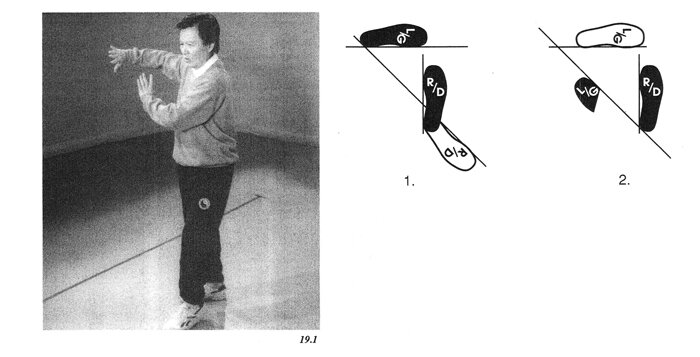

16 fist elbow
observe fist under elbowкулак локоть
кулак под локтем

Shift your weight to the left foot, drop your elbows and raise your right toes. Pivot your right foot 135 degrees to the left, keeping your elbows down and your hands directly in front of you. Now put your right foot down flat and shift your weight back on to your right foot. Stand up and place the ball of the left foot a half-step to your left. Push out to the right with your right arm curved slightly, palm outward, and your left palm pushing outward below the right forearm. (Figure 19.1)

Part A: Step 90 degrees to the left with your left foot. Lower your elbows so that your palms face out in front of your shoulders. Turn your hips, shoulders and arms as a unit to the left as your weight shifts to your left foot. (Figure 20.1)
Part B: Step 45 degrees with your right foot, turning and shifting your weight onto the right leg. Push out to the right with your right arm curved slightly, palm outward, and your left palm pushing out below your right forearm. (Figure 20.2)
Part C: Tum the left palm in to face you, take a half step to the left with the left foot, placing only the heel on the floor. Keeping your weight on your right foot, turn your hips and shoulders square to the left as you tum and reach out with the left palm and place your right fist under your left elbow. (Figure 20.3)